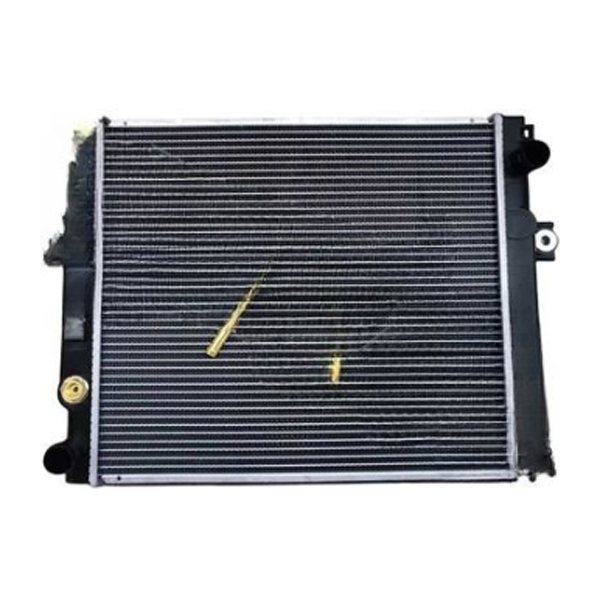

Available
Email for a quote
Yale 21039-401 Radiator Assy
| OEM part number | 21039-401 |
| Fits | Yale |
| Models / notes | GP/GTP/GLP20/25/30/35RK B871 |
| Category | Cooling |
| Type | Aftermarket replacement |
Send us the quantity you need and we'll reply with pricing, usually within 24 hours. Not the exact part? We can source it. Send the part number or a photo.